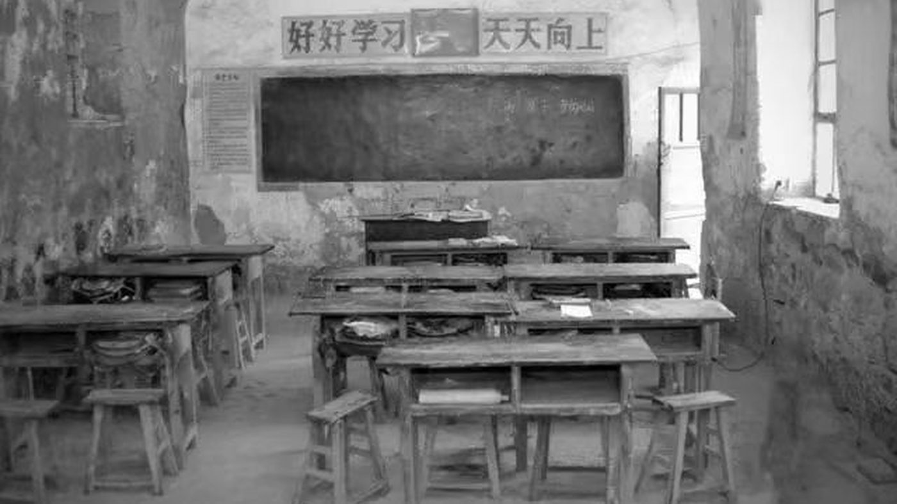

第 1 记 · 一间教室
“大家把恨记在心里，把课本藏起来，扛起红缨枪，和乡亲们一起同敌人斗争，学校还一定会再办起来的！”张景文率师生撤离南梁时对学生说（人民政协报，2026-09-10）
1934 年 2 月，南梁四合台老庄河的沟岔里，陕甘边区的第一所列宁小学开学。教室是借来的三孔窑洞，黑板是一块石板，粉笔是白垩土搓的条。
借来的三孔窑洞，和两个年轻人
1934 年 2 月，陕甘边革命委员会在南梁成立，革命政权为办学创造了最基本的条件。边区政府决定成立列宁小学，校址选在四合台老庄河的沟岔里，借用村民邵凤麟家的三孔窑洞作教室。
校长是共产党员霍建德，教员是高敏珍，第一批学生只有 10 多人。课本、纸张、笔墨全部由学校免费发放，孩子们大多是第一次走进学堂。
开学两个月，学校被“围剿”打断
1934 年 4 月，国民党地方军与庆阳陇东民团司令谭世麟兵分几路，对南梁革命根据地发动“围剿”，列宁小学被迫停办，师生疏散。
7 月，红二十六军四十二师在边区群众支持下连战连捷，粉碎了这次“围剿”，学校在闫洼子恢复开办。半年之内，一所学校停了又办，这在当时是常态。
转咀子：46 个学生，3 个教员
1934 年 11 月，陕甘边区苏维埃政府在荔园堡宣告成立，列宁小学随后迁到转咀子。村民张建堂、乔维孝献出瓦房三间、窑洞三孔，校舍扩大。
迁到转咀子后，学校设 3 个教学班、46 名学生、3 名教员。为了动员贫苦农民送子女入学，教员们挨家挨户上门走访；少部分学生是边区干部子女和收养的孤儿。
曾在南梁工作的张策回忆：“在南梁转咀子成立了个小学校，有二三十个孩子上学。这些事那时都是很新鲜的，影响很大。”
没有粉笔，就烧锅底灰
国民党对边区实行经济封锁，洋布、纸张、油墨极难输入。教学耗材全部就地取材：当地一种叫白垩土的土质做成条状晒干，代替粉笔；做饭的锅底灰收集起来兑上水，做成写字用的墨水；平整的大石板当黑板；土坯垒成凳子，两块土台之间架一块木板就是课桌。
教材由蔡子伟、张景文等动手编写，多为手抄本或油印本。为了让课文通俗易记，张景文用诗歌、顺口溜的形式编写，现存课本片段里有“马克思、恩格斯，世界革命两导师”这样的句子。
张景文：从西安来的“妈妈老师”
1934 年 11 月迁到转咀子后，从西安奔赴南梁的女青年张景文接替高敏珍任教员。据说她左右两只手都能挥毫写字，被后人称为“军中才女”。
她不仅教孩子读书识字，还像母亲一样照料他们的生活起居，缝补浆洗衣服，帮赤贫孩子解决吃饭问题，孩子们都亲切地叫她“妈妈老师”。她同时担任妇女委员长，教妇女唱“婆姨女子脚放开，长头发剪成短毛盖”。
在边区政府重视和群众支持下，到 1935 年春，列宁小学的学生已增加到 60 多人。也是这一年春天，国民党军马鸿宾部进攻南梁，学校随边区政府迁往陕北福宁镇。撤离时，张景文对学生说：“大家把恨记在心里，把课本藏起来，扛起红缨枪，和乡亲们一起同敌人斗争，学校还一定会再办起来的！”
不久，张景文在洛河川闫家湾林峁沟惨遭杀害，年仅 24 岁。今天，南梁革命烈士纪念塔上镌刻着她的英名。
一所学校的九十年
1935 年 11 月后，随着边区形势好转，列宁小学从福宁镇迁回南梁荔园堡，校长换成殷云山，学生五六十人。1937 年 3 月，学校与白马庙普通小学合并，迁至白马庙。
1947 年 3 月陇东战争爆发，学校停办；1948 年 9 月在白马庙恢复办学。此后历经多次改名和改建，“列宁”这个名字始终保留：1965 年办为完全小学，1970 年春办为七年制学校，1986 年甘肃省政府拨专款修缮。

三孔窑洞
1934 年 2 月，借邵凤麟家窑洞开学，学生 10 多人
《列宁小学课本》
手抄本、油印本，课文多写成诗歌或顺口溜
锅底灰墨水
没有油墨，就把锅底灰兑水当墨汁
布书包上的五角星
每个小学生背一个布缝的书包，上边绣着五角星
本页史实清单
- 1934 年 2 月开学于四合台老庄河，借邵凤麟家三孔窑洞，校长霍建德、教员高敏珍
- 1934 年 4 月因谭世麟部“围剿”停办；7 月在闫洼子复课
- 1934 年 11 月迁转咀子：3 个教学班、46 名学生、3 名教员；张建堂、乔维孝献房献窑
- 学制 5 年（初小 3 年、高小 2 年），6 岁免费入学，工农子弟优先；另办扫盲班
- 1935 年春迁陕北福宁镇；张景文同年牺牲，年仅 24 岁
- 1935 年 11 月后迁回荔园堡；1937 年 3 月与白马庙小学合并
资料来源：人民政协报《陕甘边区的第一所列宁小学》（2026-09-10）；华池县人民政府《红色南梁邀您来打卡！》（2023-05-05）